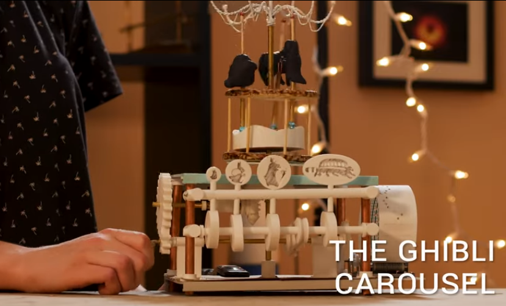
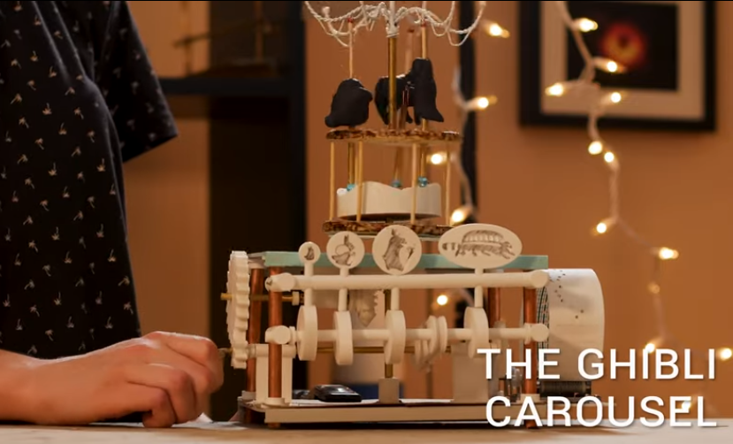

Mechanical Automata

 

>> In 12th grade I spent the year prototyping mechanical automata inspired by 18th century Dutch clocks. This project taught me heaps about moving designs from the mental to the physical world. I learned to design based on properties like gravity, friction, material tolerances, and order of fabrication. I designed many of the parts in Fusion 360 and printed them from my 3D printer. Others I made by brazing small brass tubing, which gave the pieces a beautiful rose petina.
Robotic Hand
>> In 8th grade I made an articulating robotic hand. It was 3D printed and controlled by an Arduino with potentiometers and servos. Initially it was supposed to be controlled via a glove equipped with flex sensors, but my homemade flex sensors (made from a cheap, conductive plastic material I found), weren't sensitive enough to control the hand. All in all, it was a difficult project and taught me a valuable lesson: to stick with a project even in the face of repeated failure.
This Website
>> Sophomore year I built this site using HTML and CSS. You can download it from my Github. If you like, you can use it as a base for your own site!